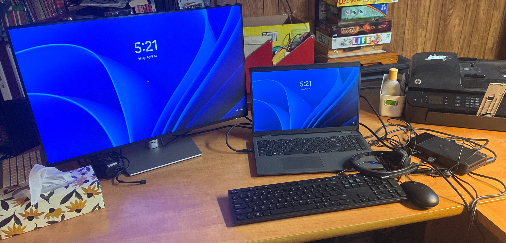

/ now
May Update
last updated may 2026
May Update
where i'm at (ᐢ. .ᐢ):
- – started a new job ! this last week ( last week of april into may ) was a busy one , with lots of onboarding and training ૮₍ ´ ꒳ `₎ა but i'm glad to be done with job searching , and am looking forward to getting situated in this role (⸝⸝> ᴗ•⸝⸝) no details until my probation is over tho ( late july ( ꩜ ᯅ ꩜;) )
- – it's impossible to work from 8:30 to 5 without adequate sleep . . or it's possible , but not enjoyable .·°՞(っ-ᯅ-ς)՞°·. seven hours is rough , six is the worst . . . whether i like it or not my sleep schedule is fixed now !
- – less time for gaming overall but it's okay , that's just how life goes sometimes (ᵕ—ᴗ—)
♡ · ♡ · ♡
what i'm into:
- – helping MORE people get into warframe ! (•ᴗ•)⌒♡ its fun to see new players experience it all , but i've put clan management on the backburner a bit . . for myself , i need to build and master more amps (˶ᵔ ᵕ ᵔ˶) ‹𝟹
- – budgeting . . or figuring out how to break down my future paychecks for pretty aggressive saving ദ്ദി(˵ •̀ ᴗ - ˵ ) ✧ personal finance is important
- – roblox game is on hiatus until further notice ( or when i find the motivation to make it a priority again ૮ ྀིᴗ͈ . ᴗ͈ ྀིა )
♡ a note:
thanks for checking out my site ! picture is of my remote work setup , it's cozy but cold . . basements are cold (˶˃𐃷˂˶)
